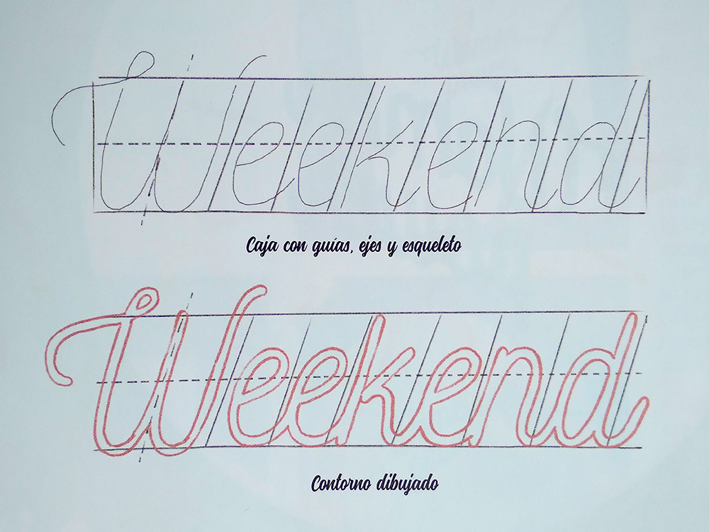

En el apartado anterior, se afirma que, entre los elementos fundamentales de la composición, se encuentra el estilo de letra. El tipo de letra escogido para un diseño tiene unas características determinadas que se deben representar en cada cajo que sustituye a cada palabra. Estas características afectan a las proporciones de dicha caja. Por ejemplo, las proporciones de un tipo de letra expandida o condensada son muy distintas. En el primer caso, la anchura de la caja es más grande y en el segundo caso, es menor.
Otros elementos que influyen en el aspecto de la estructura son el soporte final del diseño y la herramienta que se va a utilizar para el dibujo. Estos son fundamentales y se deben tener en cuenta a la hora de seleccionar la mejor estructura. El soporte final del diseño puede tener diferentes formatos: cuadrado, redondo, apaisado, con más o menos márgenes, etc. Por esta razón, todas las estructuras que se boceten deben estar adaptados al formato del soporte donde irá dibujado el mensaje de lettering.
Como sabes, puedes dibujar proyectos de lettering con cualquier herramienta y material. Los hay muy distintos y cada uno tiene unas características diferentes que permiten dibujar más cómodamente un tipo u otro de letra. Además, algo que afecta directamente al tamaño de la letra es la herramienta con la que se dibuja. Por eso, la selección de un instrumento u otro debe venir predefinida por la escala del diseño. Es evidente que un rotulador de punta gruesa no nos permitirá hacer letras de tamaño pequeño. Así que, según el material que se use para dibujar el contorno de las letras se debe de tener en cuenta las dimensiones de la caja de cada palabra.
Observa cómo son las proporciones del estilo de letra de la palabra “weekend". Luego dibuja en un folio una caja a lápiz con un eje visual principal central para representarla. Es decir, deberás dibujar un rectángulo recto. Usa la línea inferior a modo de línea de base y la superior como altura de ascendentes (la "W" mayúscula, la "k" y la "d").
Para la altura del resto de letras, traza una línea discontinua en medio del rectángulo a modo de línea media y sobrepásala para dibujar este tipo de letra.
Después divide la caja en ocho partes, una por cada letra y una extra adicional para la "W". Como ves, las letras tienen una ligera inclinación; para representarla, dibuja cada línea de partición a unos 80 grados. A continuación, dibuja el esqueleto de cada letra y alarga las extremidades de la "W" para que sea más decorativa.
